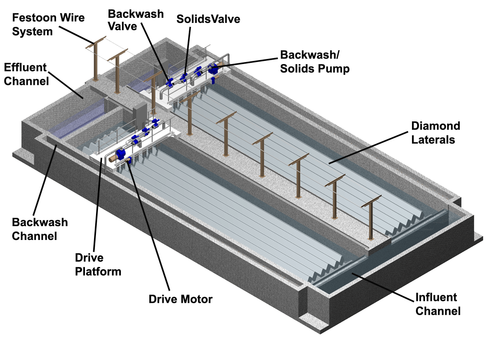
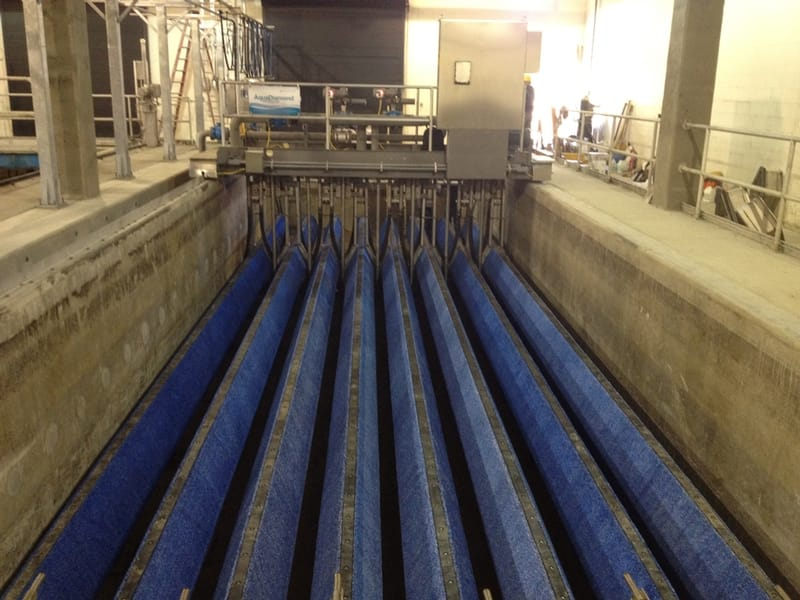

Filtro de mídia têxtil com geometria de painel em formato diamante — a inovação que maximiza a área filtrante ativa por unidade de volume, entregando maior capacidade hidráulica em menor footprint físico comparado aos filtros de disco convencionais.

O Aqua Diamond® representa a evolução dos filtros de disco com mídia têxtil. A geometria dos painéis foi reprojetada em formato "diamante" para maximizar a área filtrante ativa por unidade de volume do tanque, resultando em maior capacidade hidráulica sem aumentar o espaço ocupado.
Assim como os demais filtros da linha Cloth Media, o Aqua Diamond® opera em canal de concreto com retrolavagem automática contínua. A diferença está na densidade filtrante: mais área útil de mídia têxtil por compartimento significa maior capacidade de tratamento por módulo instalado — vantagem decisiva em expansões de ETEs com espaço limitado.
Geometria otimizada entrega mais área filtrante por metro quadrado de ocupação, ideal para espaços restritos.
Aumenta a capacidade de tratamento dentro da infraestrutura existente sem grandes obras civis.
SST consistentemente abaixo de 10 mg/L, mantendo todos os benefícios da linha AquaDisk®.
O princípio de filtração é o mesmo da linha Cloth Media: o efluente entra pelo canal, flui de fora para dentro pelos painéis de mídia têxtil — agora em geometria diamante —, e o efluente clarificado é coletado internamente e encaminhado ao efluente final.
A retrolavagem automática opera continuamente por sapatas deslizantes que percorrem a superfície dos painéis, removendo os sólidos retidos sem interromper a filtração. A geometria diamante aumenta o número efetivo de painéis por compartimento sem aumentar o volume do canal, resultando diretamente em maior vazão tratada.
Efluente distribuído uniformemente pelos painéis diamante submersos no canal de concreto.
Sólidos retidos na superfície externa dos painéis; efluente clarificado coletado no interior.
Sapatas percorrem os painéis diamante limpando a superfície filtrante sem parar o sistema.

Aumento de capacidade de ETEs existentes sem ampliação dos canais de filtração
Projetos com limitação de área física que exigem alta capacidade em pequeno footprint
Produção de efluente terciário de alta qualidade para reúso industrial e urbano
Polimento terciário com alta densidade hidráulica para plantas industriais
Alta eficiência na remoção de fósforo total em padrões restritivos de lançamento
Upgrade de módulos existentes sem substituição do canal de concreto
Nossa equipe técnica avalia seu projeto e dimensiona a solução Aqua Diamond® para máxima eficiência.